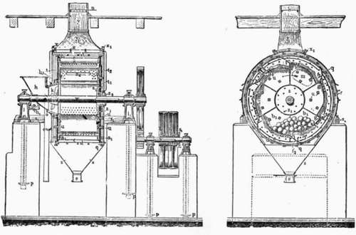
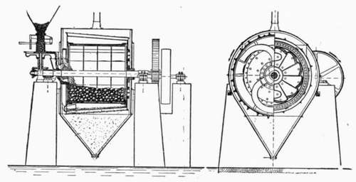
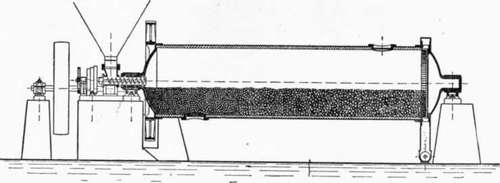
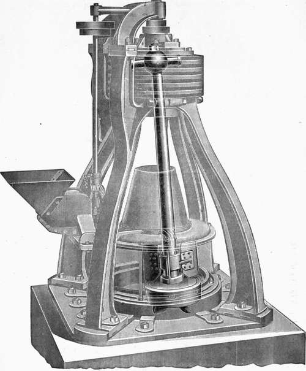
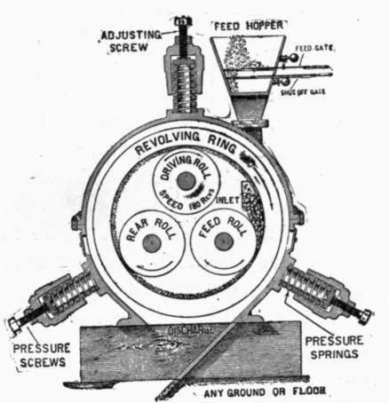

Preparation And Mixing Of The Raw Materials. Part 4
Description
This section is from the book "Cement And Concrete", by Louis Carlton Sabin. Also available from Amazon: Cement and Concrete.
Preparation And Mixing Of The Raw Materials. Part 4
28. Ball And Tube Mills
The ball mill is perhaps in most common use for the first reduction. It consists of a short cylinder of large diameter partially filled with flint or steel balls. (See cut.) The grinding plates arranged about the inner circumference overlap one another and form a series of steps. The material is fed to the mill through one axis, and as the mill revolves the balls drop down the steps formed by the plates and roll over one another, pulverizing the clinker between them. The grinding plates are perforated, and as the clinker is pulverized it passes through the perforations and drops on a screen, and finally on a second finer screen. The particles too coarse to pass the screens are returned to the grinding chamber through the openings between the steps formed by the grinding plates, while the material passing the screens is discharged to the conveyor. A ball mill working on ordinary rotary kiln clinker will grind from 15 to 24 barrels per hour to pass a 20-mesh screen and will require from 30 to 50 H.P.
KRUPP BALL MILL.
The Kominuter
The Kominuter is a modification of the ball mill, the principal point of difference being that the grinding plates are not perforated, but the material must travel the full length of the drum, escaping to the screens outside the plates through openings at the end opposite the inlet. It then travels back across the screens surrounding the plates, the material rejected being returned to the grinding chamber when it reaches the inlet end. (See cut.) The machine is said to grind 40 to 50 barrels per hour, giving a product passing 20-mesh screen.
The Tube Mill
The Tube Mill is another style of pulverizer depending upon the action of balls for the grinding. It is usually employed for the final reduction either of clinker or raw material, and from its very general adoption for this duty must be considered a very satisfactory machine. It consists of a steel cylinder 15 to 30 feet long and about 5 feet in diameter, lined with chilled iron or with stone, and mounted on trunnion bearings about which it is slowly revolved. (See cut).
THE LINDHARD KOMINUTER, F. L. SMIDTH & CO.
The tube is at least half full of flint or steel balls, the former being a natural product imported from Europe, while the latter are made in this country. As the tube revolves the balls are carried up the rising side, but before reaching the highest point of revolution they drop to the bottom of the tube, impinging upon each other and crushing the product between them. The material is fed in at one end and gradually works toward the other; the fineness of grinding is regulated by the rate of feed, and no sieving is necessary. The capacity of a tube mill 5 feet by 22 feet is said to be from 8 to 20 barrels per hour when working on the product of a ball mill, and the power consumed is variously stated at 30 to 70 H.P. The renewing of the flint pebbles forms one of the heaviest repair items, and the Cost of these has been estimated as high as one-half cent per barrel of cement.
THE DAVIDSEN TUBE MILL, F. L. SMIDTH & CO.
29. The Griffin Mill
The Griffin Mill is an American invention that has found much favor for grinding clinker. A heavy steel crushing roller is rigidly attached to the lower end of a steel shaft which is suspended by ball and socket joint at its upper end. The shaft is thus free to swing in any direction within a case which incloses a ring or die surrounding the crushing roller. When the shaft is revolved rapidly by means of a horizontal pulley at the top, the roller presses by centrifugal force against the inner surface of the ring where the grinding takes place, and thus runs around the ring in a direction opposite to that in which the pulley is revolved. The material which drops below the roller is thrown up again by steel blades attached to the bottom of the shaft, and above the roller are fans which create a draft, forcing the finished product through the screens above the ring whence it falls into a hopper. Although the repair expenses of a Griffin mill are high, it has proved a very satisfactory machine and is extensively used, especially for the final reduction of clinker. The size of mill is designated by the diameter of the ring or die. A 36-inch mill, with roller 24 inches in diameter, 6-inch face, and weighing 175 pounds, consumes 25 to 35 H.P. and grinds 8 to 10 barrels of cement per hour when working on clinker not coarser than one-half inch. The manufacturers of the Griffin mill now make a 3-roll mill of somewhat similar construction.
30-INCH GRIFFIN MILL ARRANGED FOR DRY PULVERIZING.
The Huntington Mill
The Huntington Mill is very similar to the Griffin mill, the single roller of the latter being replaced by three rolls suspended from a revolving head. As the head is revolved, the rolls press against the steel ring surrounding them, and by reason of this contact the rolls revolve upon their shafts. The output and power consumption are said to be about the same as in the Griffin mill.
The Fuller-Lehigh Pulverizer Mill
The Fuller-Lehigh Pulverizer Mill is a more recent style of grinder, said to be suitable for Portland cement clinker as well as raw material and coal. The machine consists of an upright horizontal ring or die with a circular groove or track in which travel four balls. The balls rest upon a horizontal annular plate the revolution of which causes the balls to revolve and press against the circular track. The die, plate and balls are of Swedish iron. The balls are 9 1/4 inches in diameter and weigh 112 pounds each, and as they revolve at the rate of about 210 revolutions per minute the pressure against the surrounding track is estimated to be about 1,600 pounds. The material entering the center of the mill falls into a pan below the balls and is thrown up between the balls and track. The ground material is driven upward by fans and through a screen, the rejected portion returning for further grinding.1
INTERIOR OF KENT MILL.
The Kent Mill
The Kent Mill resembles the Griffin mill in that the crushing is done between rolls and die, but the arrangement is quite dif-erent. There are three rolls, one of which is driven while the others revolve only because of their contact with the exterior ring which is revolved rapidly by the contact of the driven roll upon its inner face. (See cut.) The material is held upon the revolving ring by centrifugal force and passes under the three rolls in succession. The rolls are held against the concave surface of the ring by springs which permit some yielding, to pass lumps.
1 For cut and detailed description see Engineering News, June 21, 1906.
This mill was at first used only as a preliminary grinder or as a feeder for a tube mill, but it has been found that by screening the material, either with an inclined screen or with an air separator, it may be used economically as a fine grinder. When working on rotary kiln clinker this mill has given 40 to 50 barrels per hour of 20-mesh material with a power consumption of 24 H.P.; in grinding the same clinker to pass a 100-mesh screen, with 88 to 90 per cent, passing 200-mesh, it has given 10 to 12 barrels per hour.
Continue to:
- prev: Preparation And Mixing Of The Raw Materials. Part 3
- Table of Contents
- next: Preparation And Mixing Of The Raw Materials. Part 5